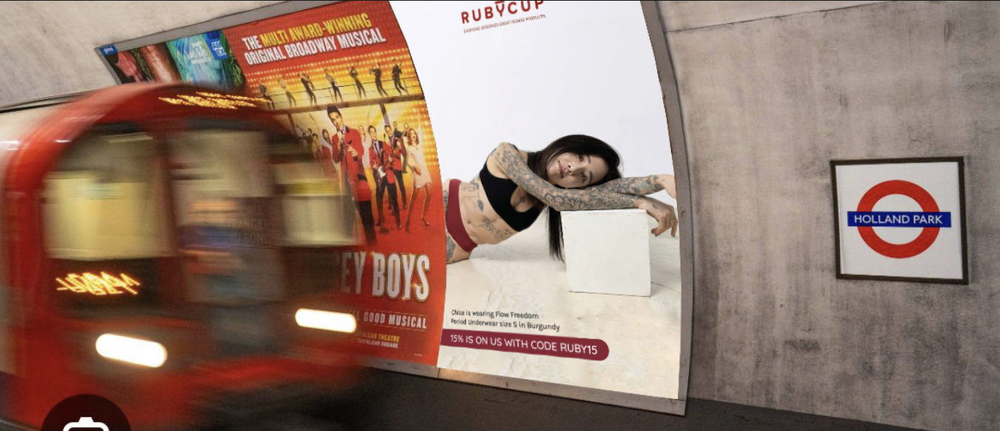

The brief
From boardroom pitch to platform posters
I presented the campaign concept to the board, secured the budget, and owned it end-to-end from there: concept, moodboard, photoshoot direction, graphic design, and coordination with Global (TfL's advertising partner) on logistics and placement across the network.

Ruby Cup's Flow Freedom campaign live on the platform at Holland Park station
What I owned
- Pitched the concept and business case to the board, and secured campaign budget
- Developed the creative concept and moodboard, with copy built around body-positive, myth-busting messaging
- Cast and directed a photoshoot with 7 models, planning the shot list and creative direction
- Directed the graphic design across all poster executions
- Coordinated with Global on station selection, timing and campaign logistics across 17 stations over 3 months
- Supported the physical campaign with targeted social content — Meta and TikTok ads — to extend reach beyond commuters seeing the posters in person
The creative

A selection of the poster executions that ran across the network
Where it ran

The 17 stations across central London selected for the campaign
Press coverage

"The activations were created by an all-women team that included the firm's artistic director Elena Picchi, CEO Amaia Arranz and marketing assistant Chloe Arneberg."
Coverage secured through a press release I wrote and pitched myself.
Result
Over 8 million impressions across the 3-month run, and Ruby Cup's first physical presence in one of London's highest-traffic advertising environments — turning an all-digital, direct-to-consumer brand into something commuters saw and talked about every day.